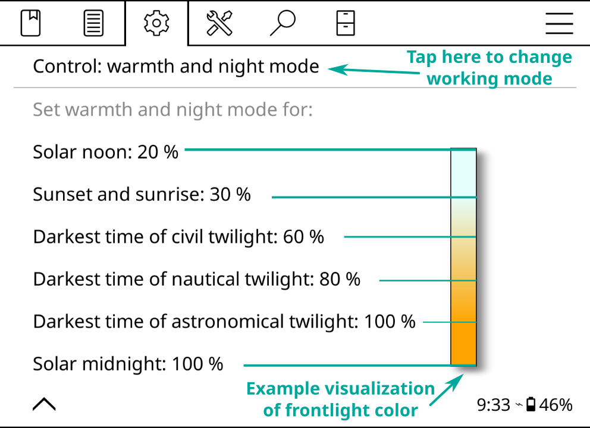

Делови текста овог упутства су обојени сагласно са категоријама:
ЗЕЛЕНО ⇒ ПУТАЊЕ МЕНИЈА
ЉУБИЧАСТО ⇒ СПОЉНЕ АПЛИКАЦИЈЕ И СЕРВИСИ
ТИЛ⇒ ЛИНКОВИ
Кроз упутство користимо и различита поља којима вас информишемо или упозоравамо:
- Исправљањем багова и имплементирањем нових функција
- Превођењем програма на свој језик или унапређивањем постојеђег превода
- Помажући осталима на форумима својим знањем
Погледајте одељак Како да дођете до нас у вези са проблемима или сугестијама за линкове.
Упутство ажурирано: 17-03-2024
- Режим USB масовно складиште на уређајима који то подржавају
- Складиште на облаку (Dropbox/FTP/Webdav) са одговарајућим налозима
- KOReader може да служи као SSH сервер, па можете да употребите SFTP апликацију или менаџер фајлова за директни пренос фајлова
- Са Calibre додатком можете да из Calibre библиотеке шаљете књиге директно на KOReader уређаје преко бежичне мреже
- Додатком за преузимање вести можете на свој уређај да преузимате RSS и Atom ставке вести као HTML фајлове
- Wallabag додатком можете да преузимате чланке са свог Wallabag налога (сервис читај-касније заснован на серверу као Pocket)
- Пређите на положену оријентацију ручно или (ако то уређај подржава) аутоматски
- Промените фонтове (укључујучи сопствене), величину фонта, контраст, тежину, кернинг, размак између речи, размак између слова у речи
- Промените поравнање текста, проред, распоред колона и маргине
- Примените или игноришите стилове и фонтове издавача
- Истичите текст различитим стиловима, постављајте маркере
- Додајте напомене користећи прилагодљиву тастатуру која укључује модификаторе за дијакритичке знаке
- Инвертујте боје на екрану
- Правите слике екрана
- Аутоматски окрећите странице
- Пратите статистику читања која укључује погледе напредак читања, временски опсег и календар
- Моћни Прегледач фајлова где можете да копирате, премештате креирате, бришете и мењате име фајловима и фолдерима
- Разне опције да погледате књиге детаљним и мозаик погледима
- Додајете књиге у Омиљено да бисте им брзо приступили
- Историја која приказује књиге којима сте недавно приступали
- Виџет за прелетање којим се брзо скаче по страницама, поглављима, маркерима
- Јединствена Мапа књиге која приказује поглед на књигу из причије перспективе, укључујући све ваше напомене и истицања
- Прегледач страница којим се кроз странице крећете као по кадровима на филмској траци
- Прегледач маркера којим се једноставно крећете по истицањима
- Креирајте садржаје аутоматски или ручно
- Сакријте и искључите одређене делове књиге као што су Додатак, Индекс, Референце итд.
- Претражујте документ одабирањем или уносом текста (укључујући регуларне изразе)
- Претражујте по маркерима, истицањима и напоменама
- Дугим тапом потражите текст у Википедији или у инсталираним речницима и преведите га
- Преводите целу страницу одједном између више од 130 језика
- KOReader може сам себе да ажурира
- Моћан систем гестикулација који можете да прилагодите и проширите
- Креирајте мени са својим омиљеним акцијама помоћу Брзог менија
- Затамните или искључите екранско светло након постављеног интервала
- Подесите интензитет предњег/позадинског светла и топлину ручно или аутоматски
- Поставите сопствени чувар екрана користећи разне опције као што су случајне слике, омот књиге, читање, напредак итд.
- Поставите аларме ограничења пуњења батерије да спречите дубоко пражњење/препуњење
- Поставите упозорење о искоришћењу меморије (корисно за уређаје са мањом меморијом) и по жељи поново покрените KOReader када се достигне то ограничење
- Опсеците маргине аутоматски или ручно
- Пресложите документе да издвојите текст и да лакше читате на малом екрану
- Примените OCR
- Различити типови зумирања и смерови тока странице у циљу лакшег читања докумената у више колона
- Аутоматски исправите накривљене документе
- Специјална Панел зум функционалност за читање манги
- Креирајте QR кôд из клипборда
- Додајте књигама сопствена дотеривања CSS стила
- Погледајте HTML извор изабраног дела EPUB документа
- Моћна функција Профили која служи за аутоматизацију акција
- Креирајте и уређујте текст фајлове на уређају
- Отворите емулатор терминала и извршавајте команде на уређају
- Погледајте статистике коришћења CPU, меморије и батерије
- Извезите напомене и истицања на уређај као текст, markdown, HTML, JSON или Kindle clippings формат
- Синхорнизујте са сервисима на мрежи као што су Joplin, Readwise, Memos, Flomo и XMNote
KOReader има 2 главна интерфејса: ЕКРАН ЧИТАЊА и ПРЕГЛЕДАЧ ФАЈЛОВА.


Помоћу следећег менија можете подесити да ГОРЊИ МЕНИ зона истовремено отвара и ГОРЊИ и МЕНИ НА ДНУ:
 → Тапови и гестикулације → Активирај мени
→ Тапови и гестикулације → Активирај мени
Зоне ПРЕТХОДНА СТРАНИЦА и НАРЕДНА СТРАНИЦА такође истовремено могу да се користе за ДВОСТРУКИ ТАП гестикулације.
Зона СТАТУСНА ЛИНИЈА може да се тапне тако да се, када је видљива само једна ставка, кружи по ставкама СТАТУСНЕ ЛИНИЈЕ. Ако су видљиве све ставке, тапови ће да прикажу и сакрију СТАТУСНУ ЛИНИЈУ. За више информација погледајте наслов „Како могу да конфигуришем статусну линију?”.


Испод су објашњене заокружене ставке у слици:
РЕСЕТ: ова опција вам омогућава да ресетујете неке особине документа као што су напредак читања, маркери, произвољна слика омота итд. и које можете да изаберете у наредном дијалогу.
УПОЗОРЕЊЕ Будите веома пажљиви када користите овај дијалог и двапут проверите ставке које су обележене, у супротном нехотично можете све да ресетујете.
ОТВОРИ СА: KOReader поседује различите механизме за исцртавање различитих типова фајлова. У неким случајевима фајл можете да отворите другим механизмом како би добили неке другачије функционалности. Погледајте одељке Приказивање фајлова архиве и Приказивање фајлова слика одмах испод.
ИГНОРИШИ ОМОТ: ако из неког разлога желите да искључите омот за ову књигу (можда поседује погрешни омот или се омот не приказује како треба на e-ink екрану) можете да изаберете ово.
ИГНОРИШИ МЕТАПОДАТКЕ: ако метаподаци ваше књиге нису исправни, поље назива може да приказује бескорисне информацје. Изаберите ову опцију да би се уместо метаподатака приказивало име фајла.
ОСВЕЖИ КЕШИРАНЕ ИНФОРМАЦИЈЕ О КЊИЗИ: када је додате у библиотеку, KOReader кешира метаподатке књиге и њен омот. Ако након копирања на уређај извршите неке измене над књигом, може бити потребно да се ове информације освеже. Ако видите погрешан омот или метаподатке, овом ставком менија можете да освежите информације о књизи.
- У Прегледачу фајлова урадите дуги притисак на име фајла
- Тапните на Отвори помоћу…
- Тапните на Приказивач архиве
- У Прегледачу фајлова урадите дуги притисак на име фајла
- Тапните на Отвори помоћу…
- Тапните на Приказивач слике
- Увек користи овај механизам за овај фајл да овај механизам придружите само са овим одређеним фајлом
- Или штиклирајте Увек користи овај механизам за тип фајла да овај пружалац услуге придружите са свим фајловима који имају исту екстензију као и фајл из дијалога. Придруживања која сте направили можете да погледате тако што тапнете на Прикажи подразумевано за типове фајлова.

- Прегледач фајлова - као што је објашњено изнад
- Омиљено - листа на коју можете да додате књиге дугим притиском на њих у Прегледачу фајлова
- Историја - листа књига које сте отворили
Начин на који се приказују ови екрани можете да промените из:
→ Режим приказаАко желите да промените број ставки које се виде на овим екранима, погледајте овде:
→ Подешавања → Подешавања мозаика и детаљне листеЗа сваки од ових дијалога можете да подесите гестикулације. На пример, док читате књигу, Историји или Омиљеним можете да приступите гестикулацијом, па да отворите другу књигу без потребе да идете кроз Прегледач фајлова.
Из горњег левог дугмета хамбургер менија можете да претражите књигу у екрану Историја по имену фајла или метаподацима књиге.
Такође можете подесити да KOReader приликом покретања уместо екрана Прегледач фајлова отвори екран Омиљено или Историја преко:
→ Почни саДодавање пречице директоријума
Постоје два начина да додате фолдер на листу Пречице директоријума:
- Када се налазите у Прегледачу фајлова, тапните дугме + (плус) мени у десном углу, па затим тапните на ставку Додај у пречице директоријума и унесите описно име ове пречице. Ово додаје фолдер у којем се третнутно налазите.
- Када се налазите у Прегледачу фајлова, урадите дуги притисак на име фолдера тако да се отвори контекстни мени. Тапните на ставку Додај у пречице директоријума и унесите описно име ове пречице. Ово додаје фолдер који сте притиснули.
Директоријуми који се налазе на листи Пречице директоријума ће имати звездицу (★) у Прегледачу фајлова.
На исти начин можете да уклоните пречице, дугим притиском на њу и избором Уклони из пречица директоријума.
Приказ пречица директоријума
Пречице директоријума можете да отворите из Прегледача фајлова или Екрана читања док читате књигу.
- Из Прегледача фајлова: + (плус) мени у горњем десном углу, па избор Директоријумске пречице или доделом гестикулације.
- Из Екрана читања: доделом гестикулације за то.
Налази се у Прегледач фајлова одељку Управљача гестикулацијама. У одговарајућем одељку овог упутства можете да научите како се постављају гестикулације.
- Језик интерфејса можете да промените из: ⇑ ГОРЊИ МЕНИ → → Језик
- Ако тапнете и задржите опцију или ставку менија (тежину фонта, проред итд.), њену вредност можете да поставите као ПОДРАЗУМЕВАНУ. Нова вредност ће се применити само на књиге које се отворе након тог тренутка. Претходно отворене књиге задржавају своја подешавања. Подразумеване вредности можете да препознате по звездици (★) у менију, или као црни оквир око индикатора, као што је приказано испод:


- У МЕНИЈУ НА ДНУ, ако тапнете и задржите на име опције, видећете објашњење те опције.
- Дијалоге који заузимају пуни екран (Историја, Садржај, Маркери, Статистика читања итд.) можете да ЗАТВОРИТЕ тако што превучете прстом наниже.
- Слику екрана можете да направите тако што извршите дугачко дијагонално превлачење прстом. Додир на супротне дијагоналне углове ће такође да креира слику екрана. Ову другу пречицу можете да употребите, на пример, када гледате слику.

У дијалозима који садрже дугмиће са стрелицама за подешавања, као што су они приказани изнад, стрелицу можете да тапнете и задржите, па да вредност мењате у већим корацима.
Овај тип дијалога (који не заузима цео екран) можете да ЗАТВОРИТЕ тако што тапнете ван прозора.
Овај тип дијалога можете да ПРЕМЕСТИТЕ тако што задржите његов наслов прозора и превлачите.
Овај тип дијалога можете да учините ПОЛУПРОВИДНИМ тако што тапнете и задржите наслов прозора (онда када желите да видите текст испод њега док подешавате вредност).
- KOReader подржава претрагу речника у EPUB и скенираним PDF/DJVU документима. Да бисте видели дефиницију у речнику или превод, једноставно тапните и задржите реч.
- Притисак и задржавање на реч отвара дијалог у којем такође можете да претражите наредна појављивања избора у документу или да га потражите на Википедији.
- Ако желите да измените величину корисничког интерфејса, за то постоји DPI подешавање:
⇑ ГОРЊИ МЕНИ → → Екран → DPI екрана
Можете да изаберете вредност из менија или да кликнете на Произвољна DPI да унесете вредност за фино подешавање: Већи DPI = Већи интерфејс
Запазите да такође постоји и подешавање Зумирање (dpi) у траци на дну. Оно се односи само на документе. Објашњење следи у наредном одељку.
- Ако вам смета, можете да искључите бљескање црне (аутоматско делимично освежавање за брисање духова) корисничког интерфејса:
⇑ ГОРЊИ МЕНИ → → Екран → E-ink подешавања
- Ако желите да видите текући датум, можете да тапнете на сат у ГОРЊЕМ МЕНИЈУ.
 → Помоћ → Претрага меија
→ Помоћ → Претрага меијаОвој функцији можете да доделите гестикулацију или да је додате у Брзи мени да бисте јој брзо приступали.
→ Тапови и гестикулације → СкроловањеКласично скроловање: овај режим ради на потпуно исти начин као скроловање на телефоу/таблету.
Турбо скроловање: овај режим вам омогућава да скролујете брже у односу на класично скроловање. Такође можете да скролујете више страница без подизања прста. Количина скроловања је пропорционална растојању за које померите прст у односу на тачку из које сте започели скроловање.
Скроловање при отпуштању: ова врста скроловања је погоднија за e-ink екране. За разлику од осталих типова скроловања, овај режим не освежава страницу непрестано док се скролује. Он ради као исто као и класично скроловање само што се не приказују међукораци. Тако да скролујете прстом, па када подигнете прст, страница скочи на ту позицију. Ово је посебно корисно да се репозиционира и подеси приказ када књига коју читате садржи слике или табеле, па желите да их видите у потпуности.
 → Назад на претходну локацију → Екран → E-ink подешавања → Пуна учесталос освежавања → Увек трепћи на страницама са сликама
→ Назад на претходну локацију → Екран → E-ink подешавања → Пуна учесталос освежавања → Увек трепћи на страницама са сликамаУз помоћ ове функције, кад се читају EPUB документи, измене изгледа текста могу да се изврше много брже тако што се исцрта само текуће поглавље.
Ротирање оријентације екрана је такође много брже захваљујући овој функцији. Ова функција је подразумевано УКЉУЧЕНА. Ако је то потребно, може да се искључи посебно за сваку књигу (једним тапом), или глобално (дугим тапом) на:
→ Документ → Укључи делимична исцртавањаНакон таквих делимичних исцртавања, књига и KOReader су у деградираном стању: можете да окрећете странице, али неке информације и могућности могу да буду неисправне или искључене (нпр. информације у подножју, садржај, статистика…). Да би се вратио на исправно стање, KOReader мора да исцрта и остатак књиге. Док се то дешава, икона у горњем левом углу екрана приказује статус:
-
 Документ је делимично исцртан. Број страница, информације у подножју и многе друге ствари су нетачне. Можете да видите како изгледа ново подешавање и да наставите са изменама. У овом стању такође можете и да окрећете странице, да следите линкове.
Документ је делимично исцртан. Број страница, информације у подножју и многе друге ствари су нетачне. Можете да видите како изгледа ново подешавање и да наставите са изменама. У овом стању такође можете и да окрећете странице, да следите линкове.
-
 Потпуно исцртавање се дешава у позадини. Још увек можете да окрећете странице, следите линкове, мењате подешавања.
Потпуно исцртавање се дешава у позадини. Још увек можете да окрећете странице, следите линкове, мењате подешавања.
-
 Комплетно исцртавање је завршено, али још увек није примењено јер KOReader чека да не радите ништа како би могао поново да учита остата ккњиге (не радите ништа=не дирате уређај). Још увек можете да окрећете странице, следите линкове, мењате подешавања.
Комплетно исцртавање је завршено, али још увек није примењено јер KOReader чека да не радите ништа како би могао поново да учита остата ккњиге (не радите ништа=не дирате уређај). Још увек можете да окрећете странице, следите линкове, мењате подешавања.
-
 Нисте додиривали уређај неко време, тако да KOReader сада поново учитава комплетан документ. У овом кораку KOReader је блокиран да би се спречила интеракција.
Нисте додиривали уређај неко време, тако да KOReader сада поново учитава комплетан документ. У овом кораку KOReader је блокиран да би се спречила интеракција.

 → Преклапање страница
→ Преклапање страницаЗУМИРАЊЕ (dpi): ово подешавање може да се сматра за општи фактор зумирања документа (осим за величину фонта). На 96 dpi (што је и подразумевана вредност), слике у документу се исцртавају у оригиналним величинама. У суштини, ово подешавање ћете употребити када желите да слике постану веће, а да величина текста остане иста.

РАЗМАК ИЗМЕЂУ РЕЧИ: колико карактери РАЗМАКА у линији могу да се сабију тако да стане више речи. Ово подешавање не утиче на речи, оно мења само размак између њих.
ЕКСПАНЗИЈА РЕЧИ: ако у линији имате превише празног простора, колики део може да се распореди у речи тако што се рашире. Ово подешавање утиче на изгед речи. Ако не желите ширење речи, поставите ову опцију на НИШТА.
Можете да експериментишете са различитим подешавањима све док вам текст не изгледа лепо, па да их затим у њиховим одговарајућим дијалозима поставите као подразумевана.

+ Не мења ширину фонта, дужина књиге остаје иста
+ Нема потребе да се документ поново исцрта, брже је
- Може лоше да изгледа на LCD или на екранима са малом DPI
+ Ако су инсталирани, употребиће се фонтови одговарајуће тежине
+ Боље изгледа на LCD или на екранима са малом DPI
- Потребно је да се фонтови поново исцртају, спорије је
ХИНТОВАЊЕ ФОНТА подешава текст тако да се добије најбоља читљивост на мрежи пиксела вашег екрана. УГРАЂЕНО У ФОНТ користи интерне инструкције за хинтовање у фонту, АУТОМАТСКО користи алгоритам за хинтовање библиотеке FreeType. АУТОМАТСКО је сигурнији избор јер инсталирани фајлови фонта могу да имају проблематичне инструкције за хинтовање. Исто тако, АУТОМАТСКО боље обрађује CJK (кинески, јапански, корејски) текст. Пробајте различита подешавања да видите које боље изгледа на вашем уређају.
КЕРНИНГ ФОНТА подешава размак између слова, тако да се добије визуелно лепши резултат. Подразумевана вредност је НАЈБОЉИ, и то може да буде спорије када се отварају фајлови (у зависности од вашег уређаја) али има бољу подршку за лигатуре (за пример, погледајте слику испод), спојене арапске словне ликове и нека остала писма. Ако је ваш уређај спор, покушајте ДОБАР јер ради брже, а још увек може коректно да изгледа у случају текстова писаних западним латиницама.

 → Статусна линија → Алтернативна статусна линија → Дотеривања стила
→ Статусна линија → Алтернативна статусна линија → Дотеривања стила- Профил Две колоне са две колоне текста мале величине, положену оријентацију и минималне маргине
- Профил Ноћно читање са већим линеарним фонтом и већим контрастом чиме се добија читљивији текст у условима слабог светла
- Профил Искључени стилови са искљученим уграђени стил и уграђени фонтови у случају лоше структурираних књига
 → Профили → Нови са текућим подешавањима документа
→ Профили → Нови са текућим подешавањима документа- Профил можете да примените из менија Профили
- Можете да му доделите гестикулацију
- Можете да га прикажете у Брзом менију
За више информација, молимо вас да погледате поглавље ГЕСТИКУЛАЦИЈЕ, БРЗИ МЕНИ И ПРОФИЛИ.
- Можете да промените фонт*:⇑ ГОРЊИ МЕНИ → → Фонт
- Повећате величину фонта⇓ МЕНИ НА ДНУ →

- Подебљате фонт⇓ МЕНИ НА ДНУ →

- Инвертујете боје на екрану (бело на црном)⇑ ГОРЊИ МЕНИ → → Ноћни режим
- Измените многе друге опције форматирања⇑ ГОРЊИ МЕНИ → → Дотеривања стила
Остале опције форматирања такође можете да измените и из МЕНИЈА НА ДНУ и тако фино подесите изглед текста.
Статистику о читању можете да видите из:
→ Статистика читања → Предње светло → Статусна линијаПостоји много ставки које могу да се прикажу на статусној линији. Али, подразумевано се приказује само једна и морате да тапнете на статусну линију да бисте кружили по осталима. Ако желите да се све ставке приказују истовремено, укључите следећу ставку менија:
→ Статусна линија → Подешавања → Прикажи све одједномСтавке можете да сортирате из:
→ Статусна линија → Подешавања → Сортирај ставкеВидљивост статусне линије можете да уљкучите/искључите гестикулацијом или из Брзог менија:
Постоји и АЛТЕРНАТИВНА СТАТУСНА ЛИНИЈА која је доступна за документе који могу да се пресложе (epub, html, docx, rtf, txt…). Ако желите да је користите, можете да је укључите из:
→ Алтернативна статусна линијаУпотреба ставке „Произвољни текст” за поравнање статусне линије
Постоји специјална ставка статусне линије под називом Произвољни текст. Ова ставка у статусној линији може да прикаже произвољни текст. Ову функцију можете да употребите за креирање граничника између ставки статусне линије.
- Најпре је укључите кратким притиском на следеће
⇑ ГОРЊИ МЕНИ → → Статусна линија → Произвољни текст: ’KOReader’
- Затим поново извршите дуги притисак на њу да се отворе подешавања. Унесите карактер „размак” у прво поље, па затим унесите број понављања у друго поље, чиме се одређује ширина граничника.
Као граничник можете да изаберете и неки други карактер. Ову ставку можете да премештате као и остале ставке, и да тако промените њен редослед.
→ Екран → Чувар екранаКао чувар екрана можете да користите JPG/PNG фајлове (најбоље изгледају исправно дитероване слике у тоновима сиве). Пренесите фајлове са компјутера у било који фолдер на уређају. Па из следећег менија изаберите тај фолдер као фолдер чувара екрана:
→ Екран → Чувар екрана → ПодешавањаМолимо вас да погледате следећи пост на форуму у вези са напредним информацијама везаним за слике чувара екрана: https://www.mobileread.com/forums/showpost.php?p=3728291&postcount;=17
- Тап ван поља за унос затвара тастатуру, тап у поље за унос поново приказује тастатуру
- Превуците навише тастере да унесете то велико слово (или мало ако се већ налазите у шифт режиму)
- Можете да измените изглед тастатуре:
⇑ ГОРЊИ МЕНИ → → Уређај → Тастатура → Подешавања изгледа тастатуре
- Можете да изаберете више од једног распореда:
⇑ ГОРЊИ МЕНИ → → Уређај → Тастатура → Распореди тастатуре
- По изабраним распоредима се крећете тако што тапнете на
 икону у тастатури
икону у тастатури

Уз искачући прозор који се добија дугим притиском, ове додатне карактере можете да унесете и превлачењем по тастеру. У примеру испод, можете да превучете навише тастер a када желите да унесете велико А, или да превучете у било ком другом смеру да унесете приказане карактере. Запазите да доњи пример приказује комплетан искачући прозор само да би било јасније објашњење. Нема потребе да отварате овај прозор, можете директно да превлачите по тастерима. Једном када се навикнете на локације додатних карактера, на овај начин ћете бити у стању да их уносите много брже.
 Ако ова функција прави сметње у начину на који користите програм, можете да је искључите тако што уклоните штиклирање са:
→ Уређај → Тастатура → Превуците да унесете додатне карактере
Ако ова функција прави сметње у начину на који користите програм, можете да је искључите тако што уклоните штиклирање са:
→ Уређај → Тастатура → Превуците да унесете додатне карактере- Брисање уназад - брише све карактере од курсора до почетка линије
- Лева стрелица - помера курсор на почетак линије
- Десна стрелица - помера курсора на крај линије
За више информација погледајте одговарајућу вики страницу:
https://github.com/koreader/koreader/wiki/Virtual-keyboard
KOReader се такође интегрише са кинеском тастатуром потеза којим се уносе упрошћени и традиционални кинески карактери. Више информација о томе можете да пронађете у нашем викију:
Овај додатак се испоручује подразумевано укључен. Ако није у менију, можете да га укључите из:
→ Још алата → Аутоматска топлина и ноћни режимТоплину предњег светла екрана можете аутоматски да подесите на два различита начина:
ФИКСНИ РАСПОРЕД: у овом режиму се топлина предњег светла мења према дневном распореду који унесете. Овај режим је СТАТИЧКИ, не узима у обзир дужину обданице. Распоред остаје исти током целе године.
ПОЗИЦИЈА СУНЦА: ова опција израчунава позицију Сунца на вашој локацији сагласно са информацијама о КООРДИНАТАМА и НАДМОРСКОЈ ВИСИНИ које унесете. Топлина предњег светла се постепено мења у сагласности са овим израчунатим подацима о положају Сунца. Овај режим је ДИНАМИЧАН. Пошто се дужина обданице мења током године, додатак аутоматски коригује распоред сагласно са дужином обданице.
Најпре погледајте следећу слику да се упознате са појмовима који се користе у додатку:

- Идите на мени додатка: ⇑ ГОРЊИ МЕНИ → → Екран → Аутоматска топлина и ноћни режим
- Тапните на ставку менија Активирај па затим САГЛАСНО СА ФИКСНИМ РАСПОРЕДОМ
- Вратите се назад на претходни мени и тапните на ставку менија ПОДЕШАВАЊА ФИКСНОГ РАСПОРЕДА
- Поставите свој распоред времена преласка уносом времена у разне ставке приказане овде. За објашњење ставки, погледајте горњу слику.
- Идите на мени додатка:
⇑ ГОРЊИ МЕНИ → → Екран → Аутоматска топлина и ноћни режим
- Тапните на ставку менија АКТИВИРАЈ па затим САГЛАСНО СА ПОЗИЦИЈОМ СУНЦА
- Вратите се на претходни мени и тапните на ставку ПОДЕШАВАЊА ЛОКАЦИЈЕ. Поставите исправно координате локације (обавезно) и надморску висину (није обавезно) и наведите име своје локације.
- Вратите се на претходни мени и тапните ставку ПОДЕШАВАЊА ТОПЛИНЕ И НОЋНОГ РЕЖИМА
- Поставите свој распоред времена преласка уносом времена у разне ставке приказане овде. За објашњење ставки, погледајте горњу слику.
Тренутни распоред можете да видите из опције менија ТРЕНУТНО АКТИВНИ ПАРАМЕТРИ.
Када то урадите, у менију ће се поред овог интервала појавити икона месеца. Ако желите да искључите ноћни режим, једноставно уклоните ознаку штиклирања Ноћни режим у том интервалу.

- Поставите режим на Фиксни распоред следећи инструкције изнад
- Па поставите подешавања слично као на слици испод:

Као што можете видети у горњим подешавањима, разлика у времену преласка између дана и ноћи је само један минут. Тако да топлина екрана иде од 0 до 100 (или обратно) за време од само једног минута. Ово време раздвајања преласка можете да повећате и тако продужите транзицију.
https://github.com/koreader/koreader/wiki/Fonts
Када се покреће, KOReader сакупља доступне фонтове из метаподатака/информација у фонту и класификује их по фамилијама и тежинама. Ово значи да можете додати различите тежине и варијанте фонта и KOReader ће покушати да употреби најпогоднији. Пошто информације о фамилији фонта узима из метаподатака, имена фонтова нису важна када их копирате на уређај. Инсталирани фонтови постају доступни након поновног покретања програма KOReader.
Ево примера неких фонтова који добро изгледају на e-ink екрану. Још њих можете да пронађете на Google Fonts веб сајту:
Серифни:
- Spectral - https://fonts.google.com/specimen/Spectral
- Vollkorn - https://fonts.google.com/specimen/Vollkorn
Линеарни:
- Wix Madefor Text - https://fonts.google.com/specimen/Wix+Madefor+Text
- Varela Round - https://fonts.google.com/specimen/Varela+Round
Фиксне ширине:
Ако планирате да користите сопствени фонт фиксне ширине, вероватно већ имате неки омиљени, па тако да овде не нудимо ниједан пример. Али на следећој страници можете да пронађете и упоредите многе фонтове фиксне ширине: https://www.programmingfonts.org/
KOReader може да генерише документ са текстом за пример који се исписује користећи све фонтове инсталиране на уређају. Ово вам омогућава да брзо упоредите изглед и могућности фонта као што су лигатуре и скупови карактера у писмима различитим од латинице, као што су грчки, хебрејски или кинески. Овој функцији се приступа из:
→ Фонт → Подешавања фонта → Генериши документ за тестирање фонтаАко књига коју читате садржи делове написане у фонтовима фиксне ширине (као што су то књиге о програмирању), фонт фиксне ширине може да изгледа ван пропорције иако је технички исте величине. Разлог за то је различита метрика фонта. Ако желите да поправите ову разлику, KOReader има опцију која вам омогућава да подесите релативну величину фонта фиксне ширине.
→ Фонт → Подешавања фонта → Скалирање фонтова фиксне ширинеОвде можете да повећате или смањите величину свог фонта фиксне ширине тако што поставите скалирање као проценат подразумеване величине.
У документима који се заснивају на HTML/CSS, као што су EPUB документи, уместо одређеног имена фонта, књиге могу да наведу употребу фамилије фонтова. Ове фамилије могу да буду Серифни, Линеарни, Фиксне ширине, Курзивни, Фантазија, Емођи, Fang Song и Математички. На пример, у некој књизи обични текст може да буде приказан у Линеарном писму, док се дијалози приказују Серифним фонтом. KOReader обично користи ваш подразумевани фонт за све ове фамилији, осим у случају Фиксне ширине и Математички (што се одређује стилом текст чворова, на пример 'font-family: serif'). Ако желите да ове фамилије имају особен изглед, овде можете да им доделите одређене фонтове:
→ Фонт → Font-family фонтовиДа бисте променили фонт фамилије за текућу књигу, једноставно тапните на жељено име фонта. Ако тај фонт желите да поставите за све књиге, извршите дугачки тап да га поставите као Подразумевани (★). Ако књига злоупотребљава ову функционалност фамилије фонтова до те мере да се ваш подразумевани фонт скоро уопште не користи, можете да искључите ту фамилију фонтова за ову књигу тако што уклоните штиклирање са придруживања.


Погледајте одељак БРЗИ МЕНИ И ПРОФИЛИ овог упутства да научите како се то ради.
Можете да користите функционалности ВИЏЕТ ЗА ПРЕЛЕТАЊЕ, МАПА КЊИГЕ или ПРЕГЛЕДАЧ СТРАНИЦА.
Овај виџет такође можете да отворите и дугим тапом на Статусну линију као и из:
→ Прелети по документу

Ако документ има много нивоа наслова, ознаке поглавља могу да буду збијене, као у примеру испод. Дубину видљивих нивоа ознака садржаја можете да измените из:
→ Подешавања → Траке напретка
Овај редуковани садржај можете да користите и за:
- наслове поглавља (ако су приказани на Статусној линији)
- кретање по поглављима
- процене времена до краја читања
Ове опције се налазе у истом менију.
Ако документ нема садржај, можете да укључите АЛТЕРНАТИВНИ САДРЖАЈ. Када укључите ово подешавање, KOReader ће да изгради садржај из наслова у документу (ако су доступни) или од појединих HTML фајлова у EPUB. Да бисте видели додатне информације, извршите дуги притисак на ову ставку менија:
→ Подешавања → Алтернативни садржајВише информација о алатима за садржај који су доступни у програму KOReader можете да пронађете у одговарајућем одељку овог упутства: АЛАТИ ЗА САДРЖАЈ
Уз то, можете и да:
- Видите колико времена сте провели на свакој страници (ако је укључен додатак Статистика читања)
- Погледате које странице имају маркер, истицања и напомене
- Скочите директно на било који део књиге, исто као и ВИЏЕТОМ ЗА ПРЕЛЕТАЊЕ
→ Мапа књиге
Мапу књиге можете да прилагодите следећим опцијама:
- Најпре пробајте да превлачите ЛЕВО и ДЕСНО уз доњу ивицу екрана да промените ширину колона које приказују странице и посматрајте како то мења скалирање мапе
- Затим пробајте да превлачите НАВИШЕ и НАНИЖЕ уз леву ивицу екрана да измените дубину наслова поглавља и да пређете на Равни приказ. Погледајте примере испод.
Уз подразумевани Приказ мреже описан изнад, овде на левој страни можете да видите Равни приказ и Приказ мреже без наслова поглавља на десној страни. Запазите вертикалну скрол линију која се мења у погледима. Ако желите да се вратите назад на подразумевани поглед, можете да извршите дуги притисак на инфо икону у горњем левом углу.


- О мапи књиге: кратко објашњење о начину на који се користи Мапа књиге, као и опис икона.
- Доступне гестикулације: уместо да користите овај мени, подешавања Мапе књиге можете да измените гестикулацијама.
- Прегледач страница када се тапне: ако је ово штиклирано, тапом на Мапу књиге се отвара Прегледач страница. Ово приказује преглед области коју сте изабрали. Ако искључите ову опцију, тап на Мапу књиге вас води директно на ту страницу. Али упамтите, у зависности од фактора као што су величина екрана, осетљивост екрана осетљивог на додир, прецизности тапа итд. може се десити да се нађете на суседним страницама.
- Пребацуј текући/почетни поглед: ако сте прилагодили поглед Мапе књиге, тап на ово врши прелаз између подразумеваног погледа и вашег прилагођеног погледа.
- Пребацуј поглед мреже/равни: пребацује између погледа одвојених поглавља и погледа непрекидних поглавља.
- Нивои поглавља: мења дубину нивоа поглавља/подпоглавља.
- Ширина места за страницу: проширује или сужава свако место за страницу.
- Маркери сваке 10. странице: како увећавате ову вредност, прво ће се додати маркери на сваку десету страницу, затим ће их повећавати, па ће коначно додати маркери на сваку пету страницу.
→ Прегледач страницаБрој страница које се приказују можете да измените превлачењем по ГОРЊОЈ и ЛЕВОЈ ивици екрана. Иконе на дну су исте као и у Мапи књигеBook . Уствари, доњи део је линеарна верзија Мапе књиге.

- У књизи не постоји садржај, тако да не можете да скачете по поглављима или да видите колико још времена имате да читате до краја
- Садржај постоји, али није од користи јер садржи погрешне наслове поглавља, или неки недостају
KOReader има неке функционалности које можете да употребите када читате књиге са проблематичним одељком садржаја.
Запазите да Алтернативни садржај није доступан за документе фиксног распореда као што су PDF, DJVU итд. јер су за креирање садржаја неопходне HTML ознаке. Функције Произвољни садржај и Произвољни скривени токови су доступне за све типове фајлова.
→ Подешавања → Алтернативни садржајАлтернативни садржај покушава да креира садржај из наслова у књизи (ознаке H1 до H6 у HTML фајловима из EPUB књиге). Ако књига не садржи ниједан наслов, покушаће да изгради садржај из фрагмената документа (појединачни HTML фајлови у EPUB књизи) који ће да показују на почетак сваког фајла.
У следећем менију можете да изаберете који нивои наслова улазе (или се игноришу) у садржај:
→ Дотеривања стила → Разно → Назнаке алтернативног садржаја → Подешавања → Произвољни садржајКада укључите ову функцију, у корисничком интерфејсу ће се појавити нове ставке менија које вам омогућавају да изаберете поглавља. Поглавље можете да додате у садржај са два места:
- Из истицања: док читате књигу, изаберите текст као да га истичете или урадите дуги притисак на реч. У искачућем менију ћете видети ставку Почетак поглавља садржаја. Када је изаберете, приказаће вам се дијалог који од вас тражи да унесете наслов поглавља. У дијалог ће већ бити унесен текст који сте изабрали. Ако је потребно, уредите наслов и притисните направи.
- Из Прегледача страница: отворите Прегледач страница из
→ Прегледач страницаИзвршите дуги притисак на сличицу странице која желите да буде почетак поглавља и изаберите из искачућег менија ставку Почетак поглавља садржаја. Приказаће вам се дијалог који од вас тражи да унесете наслов поглавља.
Када завршите са креирањем садржаја и не желите да видите ове додатне дугмиће, можете да их искључите тако што уклоните штиклирање са ставке:
→ Подешавања → Могућности произвољног распореда → Режим уређивањаКреирање садржаја неће да измени оригинални који долази уз књигу. Ваш Произвољни садржај можете да обришете из истог менија (у случају да желите креирати нови). А можете и комплетно да искључите функцију, на исти начин на који сте је и укључили, у случају да желите повратак оригиналног садржаја. Запазите да ако након креирања произвољног садржаја искључите ову могућност, он се неће обрисати. Још увек можете да се пребацујете између оригиналног и вашег произвољног садржаја.
Погледајте слику да стекнете општи преглед процеса. Кораци ће бити објашњени након слике:

Како се изузима одељак креирањем скривеног тока
- Идите на прву страницу одељка који желите да изузмете
- Отворите Прегледач страница из:
⇑ ГОРЊИ МЕНИ → → Прегледач страница
- Извршите дуги притисак на сличицу странице која представља почетак одељка који се изузима и у искачућем менију изаберите ставку Почни скривени ток овде.
- Видећете да странице почевши од оне коју сте изабрали имају сиво шрафирану позадину.
- Сада идите на последњу страницу одељка који желите да се изузме. Тамо можете да одете из Прегледача страница, или коришћењем осталих начина као што су Мапа књиге, Виџет прелетања итд.
- Једном кад се нађете на последњој страници одељка који се изузима, поново отворите Прегледач страница (ако се већ не налазите у њему).
- Пронађите последњу страницу вашег скривеног одељка и извршите дуги притисак на наредну страницу. Изаберите из искачућег менија ставку Поново покрени обични ток овде. Видећете да се позадина остатка страница враћа на нормалну боју, што означава крај скривеног и почетак обичног тока.
Рад са скривеним одељцима
Када креирате скривени ток на начин који је описан изнад, понашање програма KOReader ће бити слично као у ситуацији када из папирне књиге уклоните одељак тако што одсечете одговарајуће странице:
- Ови одељци скривеног тока ће се прескакати приликом окретања страница. На пример, претпоставимо да сте креирали скривени ток за Поглавље 10. Сада се налазите на последњој страници Поглавља 9. Када окренете страницу, видећете Поглавље 11.
- Нумерација страница ће се наставити као да ови одељци скривеног тока не постоје.
- Ови одељци скривеног тока се неће приказивати у Траци напретка (али прочитајте објашњење испод) и неће се узимати у обзир при израчунавању времена до краја читања. Али ће још увек моћи да се виде у Виџету за прелетање.
- Још увек ће да функционишу директни линкови на странице које су део ових одељака скривеног тока. Такође, још увек можете да дођете до ових одељака из Садржаја, Мапе књиге, Прегледача страница, Виџета за прелетање.
Као што смо рекли изнад, скривени токови ће се изузети из Траке напретка. Али ако скочите на један од скривених одељака користећи било који од горе наведених метода, ваша Трака напретка привремено постаје линија напретка тог скривеног одељка. Ово можете да замислите као да се трака напретка зумира у тај одељак скривеног тока. Ако изађете из овог одељка скривеног тока окретањем странице на његовом крају, или ако употребите остале алате за кретање по књизи, ваша Трака напретка се поново враћа на приказ комплетне књиге (који поново не приказује скривене токове).
Уклањање и брисање скривених одељака
Појединачне одељке скривених токова можете да уклоните из Прегледача страница на исти начин на који сте их и креирали. Такође можете и да их обришете све одједном ако употребите следећу ставку менија:
→ Подешавања → Могућности произвољног распореда → Обриши све означене страницеДок радите на креирању скривених токова означавањем страница као Почни скривени ток или Поново покрени обични ток, неке од раније означених можда више неће имати ефекта. На пример, у случају да сте направили Почни скривени ток неколико страница пре постојећег Почни скривени ток, тај постојећи више нема ефекта. Ово преклапање или застареле ознаке се памте из практичних разлога. Ако опет у претходном примеру тај одељак завршите пре постојећег-који-више-нема-ефекта Почни скривени ток, тај неактивни ће се поново активирати. Ако ометају ваше произвољне токове, можете да обришете све ове неактивне маркере, или када завршите са креирањем скривених токова и задовољни сте резултатом, урадите:
→ Подешавања → Могућности произвољног распореда → Обриши неактивне означене страницеСкривени одељци и трака напретка
Као што смо већ рекли, скривени токови ће се изузети из Траке напретка. Али ако скочите на један од постојећих скривених одељака употребом било којих од метода који су раније наведени, Трака напретка привремено постаје трака напретка тог скривеног одељка. Ово можете да замислите као да се трака напретка зумира у тај одељак скривеног тока. Ако изађете ван скривеног одељка окретањем странице на крају тог тока, или употребом било ког алата за кретање по књизи, Трака напретка се поново враћа назад на приказ комплетне књиге (који опет не приказује произвољне скривене токове).
Маркери: можете да додате (и уклоните) маркер тако што притиснете горњи десни угао. Ово је исто као да савијете угао странице физичке књиге и приказује сличну икону када га укључите.
Истицања: текст можете да истакнете једним од четири различита стила. На слици испод можете видети обичан пасус након којег следи четири различита стила истицања. Посветли (са сивом позадином), Подвуци, Прецртано и Инвертуј.

Све ове стилове можете да користите истовремено, као да су маркери различите боје. Или можете да се одлучите за омиљени стил, па да га у овом менију поставите као подразумевани тако што урадите дуги притисак на:
→ Стил истицањаНапомене: вашим истицањима можете и да додате белешке. Једноставно тапните на истицање и из искачућег менија изаберите ставку Додај белешку. Такође можете и да изаберете Маркер белешке који приказује која истицања садрже белешку. Постоји три стила: Подвучено, Линија са стране и Ознака са стране (што је икона оловке приказана на десној страни слике испод):
 Ако желите да укључите ову функцију и изаберете стил за Маркер белешке, идите на:
→ Стил истицања → Маркер белешке
Ако желите да укључите ову функцију и изаберете стил за Маркер белешке, идите на:
→ Стил истицања → Маркер белешкеНормални режим је сличан избору текста прстом на телефону/таблету и погоднији је истицања која су краћа од једне странице.
Режим Изабери и истакни је више прилагођен истицању дужих пасажа који се простиру на више страница. Такође може боље функционисати ако имате проблема са осетљивошћу екрана или са контролом моторике својих руку. Јер у овом режиму истицања нема потребе да превлачите прстом по екрану.
- Дуги притисак на почетну реч
- Померите прст на крај пасажа
- Подигните прст са екрана
Када наиђете на границу између две странице, KOReader ће окренути страницу да би могли да наставите истицање (само у EPUB/HTML документма). Ову функцију можете да искључите из:
→ Тапови и гестикулације → Дуги притисак на текст → Ауто скролуј када избор достигне угао → Тапови и гестикулације → Дуги притисак на текст → Речник приликом избора једне речи
- Дуги притисак (или превлачење ако је укључена претрага речника, као што је описано изнад) на почетну реч, појавиће се искачући мени.
- Тапните на Избор, сада се налазите у режиму истицања. Док се налазите у овом режиму, у горњем левом углу екрана ћете видети индикатор (који можете да тапнете и добијете додатне информације). Истицање можете да откажете тапом на почетак истицања. У овом режиму можете да окрећете странице таповима/превлачењима и да се слободно крећете кроз документ (садржај, прелетање итд.).
- Дуги притисак (или превлачење ако је укључена претрага речника, као што је описано изнад) на завршну реч истицања, поново ће да се појави мени.
- Овај пут тапните на Истицање и завршите истицање пасажа.
Овај дијалог се у општем случају појављује на центру екрана. Ако желите да се отвори ближе локацији вашег истицања, овде можете да промените опцију центрирано на позиција гестикулације (која се налази на другој страници овог менија):
→ Тапови и гестикулације → Дуги притисак на текст → Позиција дијалога истицања → Тапови и гестикулације → Дуги притисак на текст → Изабери и истакни → Стил истицањаАли ако истицање започнете из средине реченице, тачка на крају се неће укључити у истицање јер KOReader претпоставља да желите да извршите делимично истицање. Тако да ако желите да знаци интерпункције буду придодати тексту који истичете, постарајте се да изаберете целу реченицу. Ове знаке можете и касније да додате дугим притиском на дугмиће за Уређивање истицања.
Када тапнете на текст који је већ истакнут (али је без белешке), појавиће се следећи искачући мени. Ставке Обриши и Додај белешку су јасне. Доњи ред ставки менија се користи за проширивање или сажимање истицања.

Када тапнете на текст који је већ истакнут са додатом белешком, приказаће вам се следећи искачући мени. Тапните на Уреди истицање и отвориће вам се горњи мени у којем можете да уредите и истицање и напомену везану за њега:

На страници Маркери можете да филтрирате приказ тако да видите само један тип маркера тако што притиснете икону менија ( ) Такође можете и да филтрирате по стилу истицања:

- Менијем додатка Премести у архиву
- Гестикулацијом или
- Ставком Брзог менија
Локални извоз: истицања можете да извезете на уређај у следећим фајл форматима:
- Текст (.txt)
- HTML (.html)
- Markdown (.md)
- Kindle Clippings (.txt)
- JSON (.json)
Жељене формате извоза можете да изаберете из:
→ Извези истицања → Избор формата и сервисаМожете да видите (а такође и да измените ако то желите) локацију за извоз:
→ Извези истицања → Избор директоријума за извозМрежни сервиси: такође можете и да извезете у следеће сервисе на мрежи:
- Joplin (апликација за хватање белешки) - https://joplinapp.org/
- Readwise (мрежна апликација за маркере/истицања) - https://readwise.io/
- Memos (мемо хаб отвореног кода који ви хостујете) - https://github.com/usememos/memos
- Flomo (мрежни сервис за хватање белешки) - https://flomoapp.com
- XMNote (Android организатор маркера на кинеском језику) - https://www.xmnote.com/
Детаљна упутства за подешавање ових сервиса можете да пронађете на нашој одговарајућој вики страници: https://github.com/koreader/koreader/wiki/Highlight-export
Када изаберете формате, из истог менија додатка можете да извезете белешке за текућу књигу или за све књиге у библиотеци.
Ако желите да извршите извоз само за неке књиге из библиотеке, то можете да урадите из Прегледача фајлова:
- У Прегледачу фајлова изаберите неколико књига
- Тапните на мени дугме (приказано као знак за штиклирање) у горњем десном углу
- Из менија који се прикаже, изаберите Извези истицања
→ ПреслагањеПреслагање покушава да издвоји текстуални део документа (ако је доступан) и да га форматира у једну колону. Резултат је углавном задовољавајући. Ово такође можете да подесите и као ПОДРАЗУМЕВАНО тако што тапнете и задржите.
 →
→ 

Овом опцијом KOReader покушава да опсече маргине документа тако да текст на екрану може изгледати већи. У истом менију можете да поставите и УКЛОПИ ШИРИНУ чиме се уместо целе, покушава уклапање само ширине странице, тако да ће текст изгледати већи.
На овај начин је екран шири, па документ може изгледати довољно велики за удобно читање.

Ово је посебно корисно за стрипове. Најпре у овом менију укључите РЕЖИМ КОЛОНА:
→ 
Затим у истом менију изаберите одговарајући смер тока:

- На пример, ако читате чланак који је сложен у две колоне, скроловаћете наниже све до краја странице читајући леву колону, па ћете затим да наставите читање десне колоне од горњег десног угла странице:

- Или, ако читате стрип, одговараће вам да се крећете „десно → доле лево → десно” по цик-цак линији:

- У случају јапанских стрипова (редослед панела с десна у лево) ово може бити обрнуто:

У овом режиму такође у истом менију можете да подесите и Хоризонтално/Вертикално преклапање и Колоне како би се текст још боље уклапао на екран. Слободно експериментишите са овим подешавањима.

КОНТРАСТ Ово подешавање утиче на нивое црне у документу. Имајте на уму да се иста вредност контраста примењује и на текст и на слике. Ако је поставите на сувише велику вредност, слике могу постати превише тамне и нећете моћи да их прочитате.
УКЛАЊАЊЕ ВОДЕНОГ ЖИГА Уклања водени жиг из исцртаног документа. Такође може да се употреби за уклањање сивих позадина. Ова функција може да конвертује документ који користи нијансе сиве или боје у црно-бели формат чиме се добија бољи контраст и олакшава читање.
КВАЛИТЕТ ИСЦРТАВАЊА (РЕЖИМ ПРЕСЛАГАЊА) Поставља квалитет процеса издвајања текста и слика, као и квалитет излаза. ВИСОКИ је визуелно лепши, али у зависности од документа, може да буде много спорији (неколико секунди за окретање странице) у односу на ПОДРАЗУМЕВАНО. Ако су вам PDF/DJVU фајлови спори, ово је прво подешавање које би требало да проверите.

ЈЕЗИК ДОКУМЕНТА Поставља језик који треба да користи OCR механизам.
ФОРСИРАНИ OCR Форсира се употреба OCR чак и ако документ поседује текст слој
СМЕР ПИСАЊА (РЕЖИМ ПРЕСЛАГАЊА) Смер текста оригиналног документа. Поставите на RTL (десно у лево) за језике као што су арапски и хебрејски.
КОЛОНЕ ДОКУМЕНТА (РЕЖИМ ПРЕСЛАГАЊА) Број текст колона у оригиналном документу.

Функција АУТОМАТСКО ИСПРАВЉАЊЕ може да исправи странице проблематичних докумената, на пример, странице PDF документа који је скениран под углом. Доступна је за PDF, DJVU, CBZ/CBT документе и за фајлове слика. Да бисте је укључили, изаберите максимални угао нагнутости који ће KOReader покушати да коригује. Ако не успе, мораћете пробати да изаберете већи угао. Имајте на уму да би у зависности од више фактора, ова функција могла да успори читач.
Да бисте користили ову функцију, потребно је да:
- Инсталирате Tesseract податке о језику у свој KOReader
- Додате ново инсталиране језике у koreader/defaults.lua конфигурациони фајл (неопходно је у случају да је ваш језик није енглески или кинески)
→ Зумирање табле (манга/стрип)Када је ова опција укључена, KOReader покушава да пронађе границе правоугаоних табли на екрану. Ако извршите дуги тап на таблу, KOReader се зумира на ту таблу. Као што можете да претпоставите, ова функција најбоље ради са стриповима који имају јасне границе табли. Процедура може да се види испод:

Ако ову функцију желите да користите и са осталим типовима фајлова као што су EPUB, FB2, HTML или фајлови слика, потребно је да фајл отворите другим механизмом: у Прегледачу фајлова извршите дуги тап на име фајла, тапните на Отвори помоћу… и изаберите MuPDF.
KOReader може да пресложи PDF документе (ова опција може да се пронађе у менију на дну док читате документ фиксног распореда, као што је PDF) чиме постају погодни заприказ на малим екранима e-читача. Али ако желите најбоље резултате, било би боље да документе конвертујете у флексибилнији EPUB формат. За све врсте конверзија између формата можете да употребите програм Calibre (https://calibre-ebook.com/).
Постоји много начина да пренесете документе на уређај. Имајте на уму да ћете морати поново да покренете програм KOReader како би индексирао пренесене документе (или да освежите директоријум ако имате Pocketbook/Android).
Уз пренос фајлова на исти начин на који то радите апликацијом за читање уграђеном у читач, у зависности од уређаја, постоје и друге опције:
- Режим USB масовног складишта унутар програма KOReader: овај режим је доступан за KOBO и неке CERVANTES уређаје.
- Складиште у облаку (Dropbox/FTP/Webdav): да бисте користили ову функцију, морате да у менију приказаном испод додате налоге за сервер складишта у облаку. Процес је објашњен у ИНФО дугмадима током додавања налога:
⇑ ГОРЊИ МЕНИ (у Прегледачу фајлова) → → Складиште у облаку
- SSH/SFTP приступ: KOReader може да се понаша као SSH сервер, па можете са компјутера да му приступите и да преносите фајлове (доступно на Kobo, Kindle, Cervantes). Можете да употребите SFTP апликацију (као што је Filezilla), или у случају да оперативни систем који користите то подржава, приступите из менаџера фајлова. На викију се налази упутство како то да урадите: https://github.com/koreader/koreader/wiki/SSH
- Calibre трансфер: уз помоћ Calibre додатка можете да шаљете документе из Calibre Библиотеке директно на KOReader уређаје преко wifi мреже. На викију се налази упутсво како се то ради: https://github.com/koreader/koreader/wiki/Calibre-wireless-connection
- Преузимач вести: овим додатком можете да преузмете RSS и Atom ставке вести као HTML фајлове. На викију се налази упутство како се то ради: https://github.com/koreader/koreader/wiki/News-downloader
- Wallabag: овим додатком можете да преузмете чланке са Wallabag, сервиса за накнадно читање базираног на серверу који личи на Pocket. За више информација, погледајте вики страницу: https://github.com/koreader/koreader/wiki/Wallabag
У таквим ситуацијама брзо можете да направите снимак екрана и да га поставите као омот књиге. Подразумевана гестикулација за снимак екрана је дугачко дијагонално превлачење. Снимак екрана ће такође да направи и додиривање супротних дијагоналних углова. Ову другу пречицу можете да употребите када се приказује слика. Када направите снимак екрана из дијалога можете да изаберете Постави као омот књиге.
Овде можете да уклоните овај произвољни омот књиге:
→ Информације о књизиНа страници информација о књизи извршите дуги притисак на ставку Слика корица па изаберите Ресетуј произвољно.
You can also reset the book cover with the Reset dialog, which you can access by long-pressing the filename in the File Browser.
Calibre може да конвертује документе између разних формата. Он такође има и уграђени едитор који вам омогућава да уређујете e-књиге (и исправите проблеме) у најпопуларнијим форматима e-књига, EPUB и Kindle. https://calibre-ebook.com/
K2pdfopt оптимизује PDF/DJVU фајлове за мобилне e-читаче и смартфоне. Фино ради у случају PDF/DJVU фајлова сложених у више колона и може да пресложи текст чак и на скенираним PDF фајловима. Такође може да се користи и као општи алат за манипулацију PDF докумената који нуди копирање/опсецање/измену величине/OCR-овање. https://www.willus.com/k2pdfopt/
OCRmyPDF је апликација из командне линије која скенираним PDF фајловима (који садрже само слике без текста) може да дода OCR текст слој, тако да могу да се претражују или да се текст из њих копира и налепљује. Може бити посебно корисна за читање старих скенираних књига. Такође може да оптимизује слике смањивањем величине. https://github.com/ocrmypdf/OCRmyPDF
SingleFile је екстензија прегледача за Mozilla Firefox, Google Chrome и Microsoft Edge. Ова екстензија омогућава чување веб страница као један .html у који су уграђени сви ресурси (слике, листе стилова, скрипте). https://github.com/gildas-lormeau/SingleFile#install
ПОДРАЗУМЕВАНИ СЛУЧАЈ: имефајла.zip - претпоставља се да је у питању zip фајл слика (и отвара се MuPDF механизмом)
Ако zip фајл садржи један од следећих типова (а не само слике), молимо вас да га назовете на одговарајући начин:
- FictionBook - имефајла.fb2.zip
- HTML - имефајла.htm.zip / имефајла.html.zip
- Text log files - имефајла.log.zip
- Markdown - имефајла.md.zip
- Rich Text Format - имефајла.rtf.zip
- Plain text - имефајла.txt.zip
У случају да фајлови немају оваква имена, највероватније ће се употребити погрешан механизам читача/формата и појавиће се порука За овај фајл не постоји механизам читања или фајл није исправан. Можете да промените име фајла на начин који је описан изнад или да извршите дуги притисак на име фајла и изаберете Отвори помоћу... да изаберете исправни механизам.
Типови фајлова као што су MOBI и EPUB нису погодни за обраду садржаја који су претежно слике (нпр., манга/стрипови). Подршка за MOBI у програму KOReader је минимална до никаква, а EPUB приоритети у исцртавању текста могу да буду извор проблема када се приказују слике на целом екрану. За више техничких детања:
https://github.com/koreader/koreader/issues/9163#issuecomment-1146637205).
Најбоља опција је да изградите CBZ фајл који много боље функционише у програму KOReader. Фајл са .cbz екстензијом је zip фајл (без компресије) који представља колекцију слика, најчешће .png или .jpeg фајлова, организованих у странице стрипа. KOReader такође може да отвори и CBT фајлове који су слични са CBZ фајловима али користе формат TAR архиве.
Најједноставнији начин да конвертујете мангу у CBZ је да са разних веб сајтова преузмете мангу као слике, па да их затим конвертујете програмом Kindle Comic Converter (https://github.com/ciromattia/kcc). Постоје нека корисна подешавања као што су ауто ротирање подела од две странице на положену оријентацију и примена дитеринга тако да су градијенти исцртани на e-ink екрану глатко дитеровани, без појаве назубљених слојева.
Најбољи резултати се добијају ако промените величину слика на тачну величину екрана e-читача. CBZ специфичан за екран који циља на тачну величину екрана уређаја спречава скалирање током читања. KOReader током читања може да смањује слике на величину екрана, али се то не препоручује, јер KOReader пре скалирања додаје корак дитеровања, а тиме се губи квалитет.
Али ако желите да свој ручно направљени CBZ користите на више уређаја, или ако желите да очувате високу резолуцију за накнадне поправке, најбоља опција би била да CBZ направите тако да одговара уређају са највишом резолуцијом. Или да изаберете произвољну „високу” резолуцију, по могућству ону која одговара оригиналима. 300 PPI или боље (до 450 или чак 600), осим наравно, ако је извор ниже резолуције. Ако претпоставимо екран величине 8", 1500×2000 је добра циљна резолуција. У случају већих слика, требало би да их пробате на уређају и видите може ли да се носи са њима. На пример, доста стари Kindle уређаји са мало меморије могу да имају проблема са величинама као што су 3000×4000. Ако аутоматизујете процес, може бити корисно да размотрите истовремено креирање верзија нижег и вишег квалитета (нпр. 200/400 или 300/600 DPI).
→ Тапови и гестикулације → Окретање странице → Обрни тапове и превлачења за окретање страница- Преузмите Kindle Comic Converter (KCC) са адресе https://github.com/ciromattia/kcc
- Преузмите мангу из извора који желите да користите (нпр. HakuNeko)
- Распакујте манга фајл. Сада би требало да имате директоријум који садржи само слике (или поддиректоријуме са сликама, без архива)
- Process this directory with KCC. Each directory will produce a single CBZ file, so if you want to make several volumes at once, select multiple directories at once
Some useful settings of KCC:
Spread splitter: This feature detects double pages and allows you to rotate or cut them in two.
Upscaling: Enlarge images that is smaller than your target resolution.
You can use ImageMagick to process your images. ImageMagick, is a powerful open-source software suite for displaying, creating, converting, modifying, and editing raster images. You can download ImageMagick and use it from the command line to process many images at once.
- Unpack the prepared CBZ file that you created with KCC,
- Download the following file (dither_pack.zip) which contains two batch files (.BAT) and a GIF color template: https://disk.yandex.com/d/glEebjmPYYp7og
- Extract these three files next to your images that will be processed
- Edit the _magick_manga_ditherN_resize.bat and change the resolution to your device resolution (in both places in the BAT file).
WARNING Next step will replace all the images in the directory with the processed ones. So make sure that you have a copy of them in some other directory if you want to keep the originals.
- Run _magick_manga_ditherN_resize.bat to resize and dither the images.
- Assuming you have 7-Zip installed, run _batch_archive.bat to pack all the processed images into a CBZ archive.
["/storage/emulated/0/Books/manga"] = {
["inverse_reading_order"] = true,
["kopt_zoom_direction"] = 0,
},
where /storage/emulated/0/Books/manga is the absolute path to the directory containing your mangas. After this change, when you open a file from the mentioned directory, your swipes and tap zones will be swapped.
When opening this next file, KOReader skips the files that you have marked as finished. This feature is useful for example when you have a folder of manga files and you have already read some of them. You can mark a file as finished from the end of book dialog shown above. Also you can mark it from the File Browser by long-pressing on the file. After copying them to your device, you can:
- Open the File Browser in KOReader
- Long press on the ones you already finished and tap Mark as finished
Now you can read all the files by just tapping Open next file at the end of the book. KOReader will skip the ones you have already read.

TAP / DOUBLE TAP
Single or double tap with ONE finger
WORKS: Anywhere on the screen

TAP AND HOLD
Single tap and hold with ONE finger
WORKS: Only on four corners

TWO FINGER TAP
Single tap with TWO fingers at the same time
WORKS: Only on four corners

SPREAD AND PINCH
Same gesture as zooming in and out on a mobile phone, tablet etc.
WORKS: Anywhere on the screen

ONE FINGER SWIPE
Swiping motion with ONE finger
WORKS: Screen edges (HORIZONTAL and VERTICAL) Anywhere except edges (DIAGONAL)

TWO FINGER SWIPE
Swiping motion with TWO fingers at the same time
WORKS: Anywhere on the screen

MULTISWIPE
More than one swipe done after each other without lifting your finger. For example like drawing the letter U (DOWN-RIGHT-UP)
WORKS: Anywhere on the screen
Icons by Econceptive from the Noun Project
→ Gesture Manager- Top Left Corner > Toggle page flipping
- Top Right Corner > Toggle bookmark
- Opposing diagonal corners at the same time > Take screenshot
- Left Side > Go -10 pages
- Right Side > Go +10 pages
- Short diagonal swipe > Full screen refresh
- Long diagonal swipe > Take screenshot
- ← → - Back to previous location
- → ← - Go to latest bookmark
- ↓ ↑ - Skim document
- ↑ ← - Bookmarks
- ↑ → - Table of contents
- ↓ ← - Show frontlight dialog
- ↓ → - Toggle reflow
- → ↑ - History
- ← ↑ - Book status
- → ↓ - Go to page
- ← ↓ - Back
- ↑ ↓ ↑ - Previous chapter
- ↓ ↑ ↓ - Next chapter
- ← → ← - Open previous document
- → ← → - Favorites
- Reading progress
- Open previous document
- History
- History search
- Favorites
- File browser
- Dictionary lookup
- Wikipedia lookup
- Show menu
- Претрага менија
- Screenshot
- Toggle SSH server
- Show ephemeris
- Statistics calendar view
- Statistics today’s timeline
- Synchronize book statistics
- Exit screensaver
- Start USB storage
- Suspend
- Restart KOReader
- Reboot the device
- Power off
- Exit KOReader
- Toggle hold corners
- Enable touch input
- Disable touch input
- Toggle touch input
- Invert page turn buttons
- Toggle key repeat
- Toggle accelerometer
- Rotation
- Toggle orientation
- Invert rotation
- Rotate by 90 CW
- Rotate by 90 CCW
- Turn on Wi-Fi
- Turn off Wi-Fi
- Toggle Wi-Fi
- Show network info
- Battery statistics
- System statistics
- Show frontlight dialog
- Toggle frontlight
- Set frontlight brightness
- Increase frontlight brightness
- Decrease frontlight brightness
- Set frontlight warmth
- Increase frontlight warmth
- Decrease frontlight warmth
- Toggle night mode
- Set night mode
- Full screen refresh
- Full refresh rate (always)
- Full refresh rate (not in night mode)
- Full refresh rate (in night mode)
- Always flash on chapter boundaries
- Toggle flashing on chapter boundaries
- Never flash on chapter's 2nd page
- Toggle flashing on chapter's 2nd page
- Always flash on pages with images
- Toggle flashing on pages with images
- Auto warmth off
- Auto warmth cycle through modes
- Set font
- Increase font size
- Decrease font size
- Set font size
- Word spacing
- Word expansion
- Contrast
- Font weight
- Font hinting
- Font kerning
- Two columns
- L/R margins
- Sync T/B margins
- Top margin
- Bottom margin
- View mode (page-continuous)
- Render mode
- Zoom
- Line spacing
- Alt status bar
- Embedded style
- Embedded fonts
- Image scaling
- Invert images
- Folder up
- Show plus menu
- Toggle select mode
- Refresh content
- Пречице директоријума
- File search
- Go to page
- Back
- Open next document in folder
- Show bottom menu
- Toggle status bar
- Previous chapter
- Next chapter
- First page
- Last page
- Turn pages
- Go to page
- Skim document
- Previous bookmark
- Next bookmark
- First bookmark
- Last bookmark
- Latest bookmark
- Back
- Back to previous location
- Forward to next location
- Follow nearest link
- Follow nearest internal link
- Add current location to history
- Clear location history
- Fulltext search
- Table of contents
- Book map
- Book map (overview)
- Page browser
- Bookmarks
- Bookmark search
- Toggle bookmark
- Book status
- Book information
- Book description
- Book cover
- Translate current page
- Toggle page turn direction
- Toggle custom TOC
- Toggle custom hidden flows
- Set highlight action
- Cycle highlight action
- Cycle highlight style
- Save book metadata
- Move current book to archive
- Book statistics
- Toggle page flipping
- Toggle bookmark flipping
- Toggle reflow
- Zoom mode
- Change zoom factor
- Toggle panel zoom
- Page crop
- Margin
- Horizontal overlap
- Vertical overlap
- Fit
- Zoom factor
- Zoom to
- Direction
- View mode
- Page gap
- Progress bar
- Line spacing
- Alignment
- Font size (set)
- Font size (inc/dec)
- Word gap
- Reflow
- Contrast
- Dewatermark
- Dithering on-off
- Render quality
- Document language
- Forced OCR
- Writing direction
- Auto straighten
- Document columns
- Open top menu - F1
- Navigate to home - Home
- Navigate file list - Up/Down
- Open selected book - Enter
- Show selected book’s context menu - Right
- Exit application - Esc
- Open selected page link / Open bottom menu - Enter
- Open top menu - F1
- Back/exit application - Esc
- Show bookmarks - B
- Show TOC menu - T
- Enter highlighting mode - H
- Start/stop highlight selection - Enter
- Move highlight indicator - Left/Right/Up/Down
- Move highlight indicator faster - Shift+Left/Right/Up/Down
- Exit highlight mode - Esc
- Show font menu - F
- Increase font size - Shift+Page Up
- Decrease font size - Shift+Page Down
- Select next page link - Tab
- Select previous page link - Shift+Tab
- Zoom in - Page Down
- Zoom out - Page Up
- Next/previous page/view - Left-Right / Up-Down / Page Up-Page Down
- Go to the beginning of book - 1
- Go to 11% of book - 2
- Go to 22% of book - 3
- Go to 33% of book - 4
- Go to 44% of book - 5
- Go to 55% of book - 6
- Go to 66% of book - 7
- Go to 77% of book - 8
- Go to 88% of book - 9
- Go to the end of book - 0
- Go to the beginning of book - Q
- Go to 11% of book - W
- Go to 22% of book - E
- Go to 33% of book - R
- Go to 44% of book - T
- Go to 55% of book - Y
- Go to 66% of book - U
- Go to 77% of book - I
- Go to 88% of book - O
- Go to the end of book - P
- Zoom in - Shift + PgUp
- Zoom out - Shift + PgDown
- Zoom to fit page - A
- Zoom to fit page width - S
- Zoom to fit page height - D
- Zoom to fit content - Shift+A
- Zoom to fit content width - Shift+S
- Zoom to fit content height - Shift+D
- Manual zoom mode - Shift+M
Basically, any action you can assign a gesture can be added to the Quick Menu. Its advantages are:
- You don’t need to memorize lots of gestures for every action.
- Some infrequent actions may not worth a gesture but it can be too much hassle to find it in the menu system. You can add this kind of rarely used actions to this menu instead.
- If you are installing KOReader for a relative or friend, you can add their favorite actions to this menu so they don’t even need to go into the menu system while using KOReader.
An example Quick Menu:

There are two methods for creating a Quick Menu. Easy and Advanced. If you need only one menu, Easy method should be enough for you. If you want show different menus with different gestures you need to use Advanced method. Another advantage of Advanced method is that, if you want to use another gesture for your menu you can easily move it to another gesture. If you want to use another gesture while using the Easy method, you have to re-create your menu under the new gesture.
- Go to Gesture Manager menu via:
⇑ TOP MENU → → Taps and Gestures → Gesture Manager
- Decide a gesture for opening your menu and tap on it.
- Choose the actions you want to see in your menu from the gesture configuration menu. You can select many actions at once of course.
- After selecting all your actions, you will tell KOReader to treat this gesture as a menu. You achieve this by enabling Show as Quick Menu item on the second page as you can see in the picture below.
- You can sort your menu items with the Sort option just below it.
Now you can launch your menu with the gesture you selected. If you want to change the menu items, you can open the gesture page and add/remove items.

Quick Menu is actually a Profile which appears on your screen as a menu. So first you have to learn about Profiles. If you already know how to use Profiles, you can continue reading, otherwise jump to the Profiles heading (next section), create a Profile with some items and come back here.
We assume that you already created a Profile as instructed in the previous paragraph. Now we will turn our Profile into a Quick Menu.
1. Go to your newly created Profile and enable Show in action list (shown in the image below). This will make your Profile visible in the Gesture Manager. Also enable Show as Quick Menu (also in the image below) so your profile will be shown as a menu instead of being silently executed.

2. Now we need a way to access our menu. Go to the Gesture Manager and choose a gesture from the list to assign to our menu. Let’s say we want to tap the corner of the screen to show menu. Now tap on Tap corner then choose Bottom left. Now tap on General and go to the second page. You will find your profile as Profile x where x is the name you gave to this Profile. Tap on its checkbox to assign your profile to this gesture.
After all the steps, now you should see your menu when you tap on the bottom left corner. You can edit your menu by going to its Profile page where you can add or remove items. Also there is a Sort item there so you can change the order of your menu items.
As we said, a Quick Menu is actually a Profile. Which means you can have more than one menu. You can create another Profile and follow the same steps to create another menu if you want.
- Incremental changes, like brightness increase/decrease, bigger/smaller font size, previous/next pages or chapters, etc.
- Group of options that you activate in succession (but not simultaneously), like turning on wifi and after that starting the SSH server
You can enable this option from the following menu if you have a Gesture Manager based (Easy method) Quick Menu:
→ Taps and Gestures → Gesture Manager → “Your Quick Menu gesture” → Keep Quick Menu openOr from this menu, if you have a Profiles based – (Advanced method) Quick Menu:
→ Profiles → “Your Quick Menu profile” → Edit actions → Keep Quick Menu open→ Taps and Gestures → Gesture Manager → “Your Quick Menu gesture” → Anchor Quick Menu to gesture positionAs an example, imagine that when reading some type of books, you always:
- Rotate the screen to landscape orientation
- Increase the font size and contrast and
- Turn the screen light on
With the profiles plugin, you can do all these at once with a single action.
To create a profile first be sure that Profiles plugin is activated. If you don’t see it under:
→ Profilesthen you have to turn it on from:
→ More tools → Plugin management
When you tap on Edit actions menu item you will see the menu on the right. This is the same menu as the gesture selection menu and there are actions in many categories. Which means you can perform any Gesture action using a Profile.
You can now select several items from all these categories. The actions you selected here will be performed when you activate this profile.
- You can activate a profile with a long press on its name from this same Profiles menu
- You can activate a profile using a gesture. For this, you have to enable Show in action list from the profile’s menu. Now you can select it via:
⇑ TOP MENU → → Taps and gestures → Gesture manager → “ANY GESTURE” → General → Profile “Your profile name”
- You can also activate a profile automatically when KOReader starts if you enable Autostart in the Profile’s menu. Note that this is only possible when KOReader is starting with the File browser or Last file.
- As a profile (which is explained as the Advanced Method and stored in settings/profiles.lua)
- As a list of actions assigned to a gesture (which is explained as the Easy Method and stored in settings/gestures.lua)
This set can also be executed in two different ways:
- Applying each action in the (sorted) order when triggered (as a Profile)
- Showing it as a Quick Menu
Adding/removing actions of a set and enabling/sorting Quick Menu are done via the same actions menu. The only difference is that the actions menu in the Gesture manager has two more items (Pass through), that is why Show as Quick Menu and Sort items are on the second page.
- They are directly accessible from the KOReader plugins menu.
- They don’t need installation. You can enable them from the menu.
- They are checked by our developers so they are considered safe.
- They are automatically updated when you update KOReader.
You can enable/disable them via:
→ More tools → Plugin management- They have to be installed manually and then activated from the plugins menu.
- They should be updated manually.
- They are checked by our developers at the time they were added to our repository so they are considered safe.
You can access them from this page: https://github.com/koreader/contrib They can be installed by downloading the plugin’s directory from the page above and copying it under koreader/plugins folder on your device. But still check the plugin’s page for other possible instructions.
- They have to be installed manually and then activated from the plugins menu.
- They should be updated manually.
- They are NOT checked by our developers so be aware that there might be risks using them.
Some notable examples of these external plugins:
- AskGPT: You can ask questions to ChatGPT about parts of your book. You can also use this plugin to simplify, explain, discuss or translate text to other languages. https://github.com/drewbaumann/AskGPT
- Anki plugin for KOReader: KOReader plugin enabling Anki (an open-source flashcard software) card generations for words looked up in the internal dictionary. https://github.com/Ajatt-Tools/anki.koplugin
- Zotero for KOReader: This addon allows you to browse your Zotero (an open-source reference management software) collections from KOReader. https://github.com/stelzch/zotero.koplugin
Also you can click this link to open a search page on Github to discover more KOReader plugin projects: https://github.com/search?q=koplugin&type;=repositories
Auto frontlight - Automatically toggles the frontlight according to ambient light level (Only available on Kindle Voyage and Oasis)
Auto warmth and night mode - Allows you to adjust frontlight warmth in devices with natural (yellow/orange) light and set Night Mode automatically according to a schedule
Auto power save - Puts the device into standby, suspend or power off after specified periods of inactivity
Autosuspend - Suspend device after chosen period of inactivity (available on all e-ink devices except android os)
Autoturn - Automatically turns the page after a set period of time
Background runner - Service to other plugins: Allows tasks to run regularly in the background.
Battery statistics - Collects and displays battery usage statistics of your device
Book shortcuts - Allows adding a book shortcut to a gesture
Calibre - You can send documents from your Calibre Library directly to your KOReader devices via WiFi connection. Check the wiki for how-to: https://github.com/koreader/koreader/wiki/Calibre-wireless-connection
Cover browser - Allows cover display modes for file browser and history
Cover image - Saves the cover image of the current book as a file (available on Android/PocketBook/reMarkable devices)
Export highlights - Export highlights and notes to local files or to Joplin (a note taking application)
Flashcard trainer - Show flashcards using spaced repetition (SM2) of highlight from your library
Gestures - Provide gesture support for KOReader
Japanese support - Japanese language support for KOReader that extends built-in dictionary and selection system
Keep alive - Keeps the device awake to prevent automatic WiFi disconnects
Move to archive - Moves current document to archive folder
News Downloader - Retrieves RSS and Atom news entries and saves them as HTML files. Check the wiki for how-to: https://github.com/koreader/koreader/wiki/News-downloader
OPDS - Allows you to download books from online catalogs
Perception expander - Allows using peripheral vision to read more quickly. Check this YouTube video to see how it works: How to Triple Your Reading Speed in 20 Minutes (Tim Ferriss)
Profiles - Allows combining multiple settings to make switchable profiles
Progress sync - Synchronize your reading progress across different KOReader devices. Check the wiki for how-to: https://github.com/koreader/koreader/wiki/Progress-sync
QR from clipboard - Generates a QR code from clipboard content
Read timer - A countdown timer to display a message after a user defined time
Reading statistics - Calculates reading sessions statistics and reading speed for use in chapter/book remaining time estimations
SSH - Allows access to your device over SSH protocol. You can access via FTP applications or even your file manager if it supports. Check the wiki page for how-to: https://github.com/koreader/koreader/wiki/SSH
System statistics - You can see your CPU/RAM/BATTERY info via this plugin under:
→ Help → System statisticsTerminal emulator - Starts a shell (command prompt) on your device that can run full terminal apps
Text editor - A basic text editor to create and edit plain text files
Time sync - Synchronizes the device time with NTP servers
Tweak document settings - Allows tweaking settings of a document before it is loaded based on external factors
Wallabag - Downloads the latest articles from a Wallabag server as individual EPUB files. Check the wiki page for more info: https://github.com/koreader/koreader/wiki/Wallabag
You can find a current list of User patches in the related GitHub wiki page:
https://github.com/koreader/koreader/wiki/User-patches
and in the issues list under the User patch available tag:
https://github.com/koreader/koreader/issues?q=+label%3A%22User+patch+available%22
- Create a directory named patches under koreader directory on your device (On Android this folder is located on the SD-card)
- Download and put the patch file with .lua extension in this patches directory
- Restart KOReader
When you create a patches directory as instructed, a new plugin named Patch Management becomes available in the plugins menu after restarting KOReader. With this plugin you can see the list and status of your user patches and enable/disable them. You can tap About patch manager menu item to see more info.
Execution order of a patch is determined by the first digit of the number in the patch name. For example: 2-TOC-title-patch.lua If there are several patches starting with the same digit, the execution order is the natural order (1<10<11<12<13<…<109<…<10010). If you are just downloading an already made patch you don’t need to change the file name.
Names starting with:
- 0 - Executed very early and only once after an update
- 1 - Excuted very early on every start of KOReader (but after 0 if applicable)
- 2 - Executed after UIManager is ready on every start of KOReader
- 3-7 - Reserved
- 8 - Executed before exit and before settings get saved
- 9 - Executed right before exit
If you have a problem with a user patch, you can revert to your previous configuration by removing the patch file.
KOReader can update itself over Wi-Fi. You can trigger the check via this menu item:
→ Update → Check for updateKOReader can dim your frontlight to preserve battery if your device is idle for a while. You can turn on and adjust this feature via:
→ Screen → Automatic dimmerIf you want to know how many lines or words are being shown on the current page you can see it at:
→ Информације о књизи- Choose any gesture (including the complex ones with custom multiswipes) and make it your "unlock" gesture by going to:
⇑ TOP MENU → → Taps and gestures → Gesture manager → "your selected gesture" → Device → Exit screensaver
- And then enable this option:
⇑ TOP MENU → → Screen → Screensaver → Settings → Keep the screensaver on screen after wakeup → Until 'Exit screensaver' gesture
If you need to switch between two documents (when comparing them for example), there is a quicker way than going through the File Browser. KOReader can open the last document with a gesture (←→← multiswipe). If you define a gesture’s action as Open previous document, you can switch between two documents quickly similar to Alt+Tab feature on the desktop computers. You can find this feature under:
→ Taps and gestures → Gesture manager → “ANY GESTURE” → General → Open Previous DocumentAlso you can use the History dialog to switch between documents quickly. The history screen can be opened with the →↑ multiswipe gesture. You can also define any other gesture for this of course.
When you adjust your document defaults like default line spacing or default contrast, this new value will only be used for the new documents you open after the change. Your already opened books will look the same. For example, if you change your default FONT, you will probably adjust FONT WEIGHT and LINE SPACING to more suitable values for this new font. Then probably you will want to apply these changes to all your opened books. With this feature you don’t need to change these values manually in all your opened books.
You can easily apply these changes to your already opened books by choosing:
→ Reset document settings to defaultWhen you tap this option, your current book will reset to latest defaults you set. Don’t worry, this will only change the appearance of the book. Your reading position, highlights, notes and bookmarks will be preserved.
When you adjust a book to your liking, for example by changing line spacing, font contrast etc. you can save all the changes at once as defaults. Then you can apply these settings to other books with the Reset document settings to default option as explained above.
You can save your changes as defaults by choosing:
→ Save document settings as defaultIf your document has links and you are accidentally tapping them while turning the page or using other gestures, you can turn off Following links by tapping via this menu item:
→ Taps and Gestures → Links → Tap to follow linksAfter disabling this setting, to follow a link you have to long-tap on it and select Follow link from the popup menu. If you have the opposite problem and you want to make tapping links easier, you can enable Allow larger tap area around links from the same menu.
Li-ion batteries experience more degradation at the extreme ends of their charge levels. To minimize this degradation and extend your battery life, you can limit your minimum discharge level to 20% and maximum charge level to 80% (as in electric vehicles and some newer phones). Which means you start charging your device when the battery goes down to 20% and unplug when it reaches 80% (or 25%-75% if you are extra cautious).
KOReader can warn you by showing an alert when charge level reaches your defined limits:
→ Device Status Alerts → Battery LevelIn older Kindle devices some of our users reported crashes due to limited memory. KOReader memory usage can go up if you open many files in one session. Especially PDF’s increase this amount. You can add a memory indicator to your STATUS BAR and restart KOReader if this value gets high, to avoid crashes or reboots.
→ Status Bar → KOReader memory usageAlso you can configure KOReader to restart automatically if memory usage reaches a threshold via:
→ Device → Device Status AlertsYou can see your detailed battery usage statistics via this menu item:
→ More Tools → Battery StatisticsYou can see your system information like CPU/DISK SPACE/RAM usage via this menu item:
→ Help → System statisticsYou can change your book cover from this menu:
→ Book information → → Set cover imageIn reading statistics you can change the start of day used for calculations. This is useful if you are reading after midnight for example and want your reading session counted as today instead of the next day. This applies only to the Day timeline view and optionally to the Calendar view; it does not apply to any of the other statistics reports. You can set this time at:
→ Reading statistics → Settings → Daily timeline starts at...KOReader is optimized to work fast even on the limited hardware of e-book readers. Generally thousand page books can be opened in seconds and page turning is immediate. Here we will talk about the reasons if your book feels very slow when opening, page turning or adjusting its appearance.
If the problematic book is a PDF:
- PDF file itself might be too big for your device memory.
- PDF file might contain very large image files. Even in documents with a normal text layer (which you can select and highlight) there might be another image layer embedded (generally a scan of the page). This slows down the opening and page turning because these large images has to be rescaled to fit on your screen and this process can be CPU intensive.
- PDF file might have lots of individual elements that needs precise positioning, like a magazine page with lots of images and text boxes. In this case KOReader has to calculate and draw all these elements which can take time.
- Auto straighten feature (which allows you to adjust the tilt of the page) might also slow down your reader.
- If you set your RENDER QUALITY to HIGH while REFLOW is ON, text will be more pleasing but it can be much slower (up to several seconds per page turn) than DEFAULT depending on your document.
⇓ BOTTOM MENU → → Render Quality
If the problematic book is an EPUB:
- EPUB files are basically composed of text and images with some rules to determine how these items are formatted on the screen. In ideal conditions, this is a fairly simple process so EPUB files are generally fast in KOReader. But some EPUB books add a great number of formatting rules that KOReader has to do many calculations just to show even a single sentence. This will slow down opening the book, turning the pages and changing the appearance properties like font weight or line spacing.
INFO KOReader doesn't support fixed layout EPUBs. They will open, but will render as reflowable EPUBs and probably won't look nice or readable.
- EPUB files are ZIP archives that contain HTML files. Some books can be a single HTML file while others may be composed of multiple HTML files like each chapter of the book is a separate HTML file. If your book is only a single HTML file, partial rendering can not work. So appearance changes will be slower than the divided chapter books, because for each change, KOReader still has to calculate the whole book instead of only the current chapter.
- Another rare case of slowness is when the content is wrapped in a HTML table tag. KOReader has to render/draw each cell on each page turn, so if a cell (containing many paragraphs) spans 50 pages, this will make page turning quite slow. See below for the solution.
If everything is slow:
Reasons mentioned above is generally valid if only some of your books are slow. If all of your books are slow, your problem might be device related:
- Very slow CPU or low RAM.
- Your flash memory (where your books reside) might be degrading, which is generally due to the old age of the device.
- You are running out of storage space.
- If you are using an Android based device, your Android OS might be interfering with the operation of KOReader or some background processes might be using your system resources.
SOLUTIONS:
Unfortunately, for bad PDF files there are not many solutions. Generally best solution with problematic PDFs and EPUBs is trying to find a better version of it. Or if another file type is available for download, like EPUB instead of PDF (or reverse) you can try that format.
Following solutions are for EPUB files and they might require advanced knowledge:
- You can set Embedded Styles to OFF in the bottom menu to see if ignoring all the document stylesheets makes it faster (of course, you'll probably lose any nice formatting, but you'll know what is the culprit).
- If you have HTML and CSS knowledge, you can inspect the HTML and the CSS files directly from KOReader and judge their quality or unnecessary complexity by yourself. To do this, you can long-press on some text and choose View HTML in the popup menu.
- If you have the “content wrapped in a table” problem as mentioned above in the problems section, you can add this table, tr, td { display:block; } book-specific style tweak to:
⇑ TOP MENU → → Style tweaks → Book-specific tweak
- Calibre’s e-book editor can check EPUB files for problems and has tools to fix some of the problems.
You can download Calibre from here: https://calibre-ebook.com/
You can see the instructions for the Check book tool of Calibre here: https://manual.calibre-ebook.com/edit.html#checking-the-book
- EPUBCheck application can check the validity of the EPUB files and detect many types of errors. You can read an example issue, where the problem is detected with EPUBCheck https://github.com/koreader/koreader/issues/11268
You can download the command line version from here: https://github.com/w3c/epubcheck
Or download a graphical user interface version from here: https://github.com/w3c/epubcheck/wiki/GUI
Opening an issue:
If you are opening an issue about this problem, it is important for us to inspect the problematic file. You can share the file directly by dragging and dropping it on your GitHub message after compressing it as a ZIP file. If your book is an EPUB and you don’t want to share the file due to copyright or privacy issues, there is a plugin for Calibre named ScrambleEbook which you can access the download and instructions from this page:
https://www.mobileread.com/forums/showthread.php?t=267998This plugin will read an un-DRM'd ebook file (EPUB/KEPUB/AZW3) and create a copy of the book with its text replaced with random characters. You can share this scrambled version with us in your issue thread. Text of the book will not be readable and there won’t be any copyright violation but we can still use this file for diagnostic purposes.
Here you can see this procedure in a real issue involving a very problematic EPUB file as an example:
https://github.com/koreader/koreader/issues/11465Probably you tapped on the STATUS BAR touch zone at the bottom of the screen. You can bring it back by tapping the same zone.
This can happen in cases like shaking hands or device touch screen problems. If you have this problem, you can try to increase the Tap interval. By increasing this interval, you tell KOReader to ignore quick taps at the same location.
→ Taps and Gestures → Gesture intervals → Tap intervalIf your two consecutive taps are separated by a distance, this would not apply. So you can still quickly browse pages by tapping quickly alternatively with two fingers.
In Android devices KOReader can’t write to the external storage due to Android system restrictions. If you want to change your screenshot saving location, be careful to choose your device’s internal storage.
Even if KOReader is set to full refresh after every page, you may still see some ghosting/residue after turning pages. This is a limitation of e-ink screen technology and can be observed on the latest generation devices, especially while reading mixed content (text+images) documents. As a workaround, you can refresh one more time manually after turning the page to get rid of these artifacts if they bother you (short diagonal swipe gesture by default).
Sleep covers generally use a magnet embedded in the cover which enables wake up and sleep events via triggering a sensor in your device. In some cases like misaligned magnets, weak magnets etc. this triggering can be problematic. If you are having problems with waking up your device with your cover, you can disable this feature via this menu:
→ Device → Ignore all sleep cover eventsIf you get miscentered titles, headings or separators, or unexpected text indentation, try switching the style for your document. epub.css to html5.css. This kind of problems happen because some publishers assume their books will only be read on web browser engine based readers, so they don't bother "resetting" the styles.
→ Style- Default HTML/EPUB (epub.css) is our book-oriented stylesheet, with text-align: justify, text-indent on P. It is better for unstyled books, and might make styled books more readable.
- You can try switching to HTML5 (html5.css) if your book has indentation problems as mentioned above. This style provides a base stylesheet like web browsers do when rendering: text-align: left, no text-indent on P, spacing between P. But it doesn’t look pretty when publishers hasn’t done any styling.
KOReader keeps a cache of your book covers to be able to show them quicker. In normal conditions this cache doesn’t get too big. If you remove lots of books or rename directories, you may want to clean up your book cover cache database to reclaim some space. You can do it from this menu:
→ Settings → Mosaic and detailed list settings → Book info cache managementWhen you are reading a PDF/DJVU document, KOReader keeps a cache of the last page you have read. So when you reopen the book, it will be faster. But this cache can grow big if you are using KOReader for a long time and reading many PDF/DJVU documents. These cache files are kept under your KOReader installation directory under the cache folder. To clear this cache and reclaim the space you can go to:
→ More tools → Developer options → Clear cachesIn rare cases that you want to backup and restore your KOReader with all your settings, you can backup these folders and files under the KOReader installation directory. Then you can overwrite them after a clean installation to restore your settings:
- settings
- styletweaks
- data/cr3.ini
- defaults.persistent.lua
- history.lua
- settings.reader.lua
- Files under data/dict/ and /data/tessdata/ directories (if they exist)

On the Issues page click the New Issue button. But before doing that, we suggest using the search bar to see if there is already an existing issue about the same topic. You can also check other opened issues to have an idea about the process.
When you click the New Issue button you will be presented with two options:

Click the appropriate one and follow the instructions on the page to report your problem or suggestion.
If you are reporting a bug, verbose debug logs are very helpful to determine the problem. You can enable them via:
→ Help → Report a bug → Enable verbose loggingYou can also find the version number of your KOReader and your device type from the same dialog for reporting.
If you have a suggestion or question related to this User Guide you can write to the discussion thread: https://github.com/koreader/koreader/issues/11147
Find other KOReader users on MobileRead forums: https://www.mobileread.com/forums/forumdisplay.php?f=276
Reach us at Gitter chat: https://gitter.im/koreader/koreader
Support the project via Liberapay: https://liberapay.com/KOReader